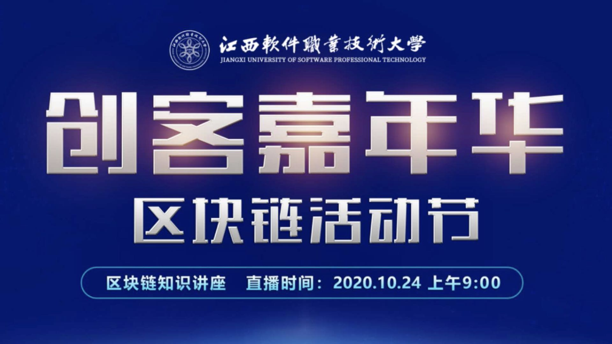

软件工程学院现有在校生2000余人。开设本科专业4个，即：软件工程、智能控制技术.jpg) 、计算机应用工程、大数据技术与应用
、计算机应用工程、大数据技术与应用.jpg) ；开设了专科专业5个，即：软件技术、嵌入式技术与应用、人工智能技术服务、工业机器人技术、大数据技术与应用。软件技术专业根据市场用人需求，设置了五个专业方向，即（软件技术(Web软件设计)、软件技术(移动互联网开发技术)、软件技术(网络游戏开发方向)
、软件技术(软件测试方向) 、软件技术（Ui设计）等）。 学院共有专任教师74名（不含思政部和基础教学部），其中正高职称 8
人，占总数的10.1%、副高职称13人，占总数的17.8%，中级职称24人，占总数的32.8%。具有硕士学位以上的21人，占总数的28.8%，本科以上学历的52人，占总数的70%。有江西省中青年学科带头人1名，江西省高校中青年骨干教师2名
；开设了专科专业5个，即：软件技术、嵌入式技术与应用、人工智能技术服务、工业机器人技术、大数据技术与应用。软件技术专业根据市场用人需求，设置了五个专业方向，即（软件技术(Web软件设计)、软件技术(移动互联网开发技术)、软件技术(网络游戏开发方向)
、软件技术(软件测试方向) 、软件技术（Ui设计）等）。 学院共有专任教师74名（不含思政部和基础教学部），其中正高职称 8
人，占总数的10.1%、副高职称13人，占总数的17.8%，中级职称24人，占总数的32.8%。具有硕士学位以上的21人，占总数的28.8%，本科以上学历的52人，占总数的70%。有江西省中青年学科带头人1名，江西省高校中青年骨干教师2名
